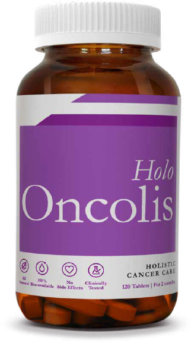
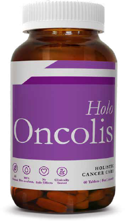
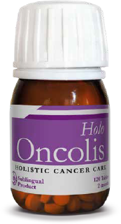
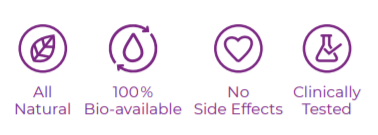
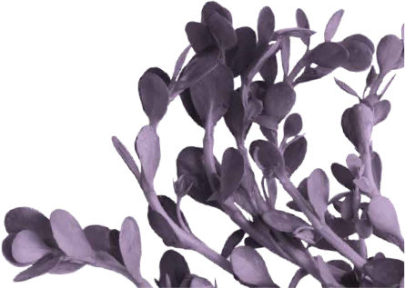
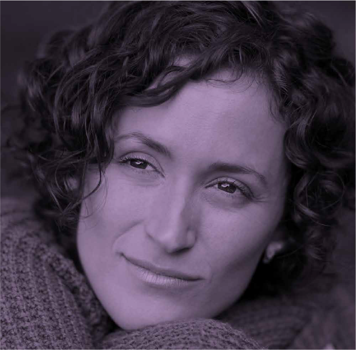

Not how it
was done
Just how it
will be done.



HoloOncolis is a precision nutraceutical products comprising natural extracts
Curcumin, Saponins and Bacoside.
With its antioxidant, anti-inflammatory and
anti-depression properties,
HaloOncolis offers Holistic Cancer Care and aslo alleviates the associated stress and anxiety problems.

BUY NOW
Some date it back to Hippocrates. Some later. Yet the fundermentals
remain the same, pain should not precede a potential possibility. Is that wishful thinking ? No
All we have to do is embrace the plant.
Follow the
science.
THE GOODNESS OF PLANTS

Journal of American medicine anyone?
In the hallowed research labs across the world there is deep
conviction paper after paper.
One in two cancer patients in the United States utilize
agents derived from different parts of plants or nutrients (complementary and alternative medicine),
exclusively or concomitantly with traditional therapeutic regimen
KNOW MORE
Test tube gazing.
The National Library of Medicine, the National Center of
Biotechnology information has several papers on plant-based
solutions. These papers reveal that In 2020 cancer accounted for
9.9 million deaths worldwide. Conventional treatment involves
mono chemotherapy or a combination of radiotherapy and
mono chemotherapy. The negative side effects of these
treatments have led the scientific community to look for
innovative sources of anti-cancer compounds.
KNOW MORE
Centres of
renown.
The US National Cancer Institute's (NCI)
Natural Product Repository is the go to
institution for a truly diverse collection
of natural products with over 230, 000
unique extracts. This forms the basis
for leading research into screening of
extracts and the isolation of bioactive
natural products. Fortunately this
research is accessible and forms the
basis for a holistic approach.
KNOW MORE
The expert view
Hu Wang, Francisco Fuentes and others from the Graduate Program
in Pharmaceutical Sciences, Department of Pharmaceutics, Ernest
Mario School of Pharmacy, Rutgers, The State University of New
Jersey, have been cited often for their work in the field of plant-based
solutions that fight cancer through a process of scientific validation.
REQUEST A CALL BACK
Doctor speak
Doctors emphasise the need to place the patient first and
look for solutions that are not an either or. A careful study
of the data on hand backed by clinical tests leads to a
better-informed solution.
REQUEST A CALL BACK
How you respond,
defines how we do.
Each of us reacts differently and there is no one universal belief in
how cancer should be treated. Growing validation of nature-based
solutions has only led to more light being cast on this.
Do write in to us with your queries and beliefs,
we would look forward to sharing our research papers.
Our own test.
Our studies have evaluated the anticancer properties
of natural compounds derived from plants, both in
vitro and in vivo. In pre-clinical stages, some promising
compounds could be mentioned, such as the
sulforaphane or different phenolic compounds.
On the other hand, some phytochemicals obtained
positive results in clinical stages and were further
approved for cancer treatment. What makes this effort
significant is overcoming low solubility and restricted
effects while still maintaining zero side effects.
KNOW MORE

Arm your body.
Looking at a holistic approach begins with a
strong dietary influence. Much has been
articulated around antioxidants and diets that
encourage resistance to Cancer.
First shown to have anti-bacterial activity in
1949, curcumin has since been shown to
have anti-inflammatory, antioxidant,
pro-apoptotic, chemo preventive,
chemotherapeutic, anti-proliferative, wound
healing, anti-nociceptive, anti-parasitic,
and anti-malarial properties as well.
KNOW MORE
Above all, the mind
The cancer diagnosis and why me leads to a
severe impact on mental health and
wellbeing, This might also hinder treatment
and recovery, the life ahead and survival.
This is an area that calls of intensive research
and requires greater clinical priority. We have
worked with the research papers on cancer
and anxiety from 2012 to 2019 and these have
been assessed by our own Oncologists.
The task is to identity potential care and
treatment options. We will have actionable
recommendation for future research soon
KNOW MORE
Holo Oncolis in a liquid form has been given to stage-4 cancer patients under
the guidance of our Oncologist who is working closely with the patient’s family
and Doctors. This is under the aegis of a philanthropic organisation at no cost
to the patients. This is being monitored and the results would be studied
closely by experts.
UNDERGOING ACTIVE RESEARCH
Featured in

ACT NOW
Cancer is one of the deadliest diseases known to mankind and has been seeing conventional responses for the past five decades. Solutions are emerging where plant-based solutions are standing the scrutiny of clinical tests and offering a solution to patients. Reach out to us to talk with our Oncologist. We are here to help at ZeroHarm.